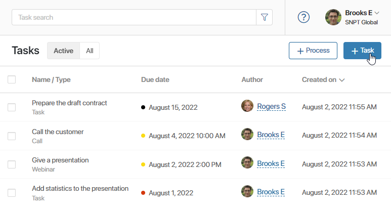
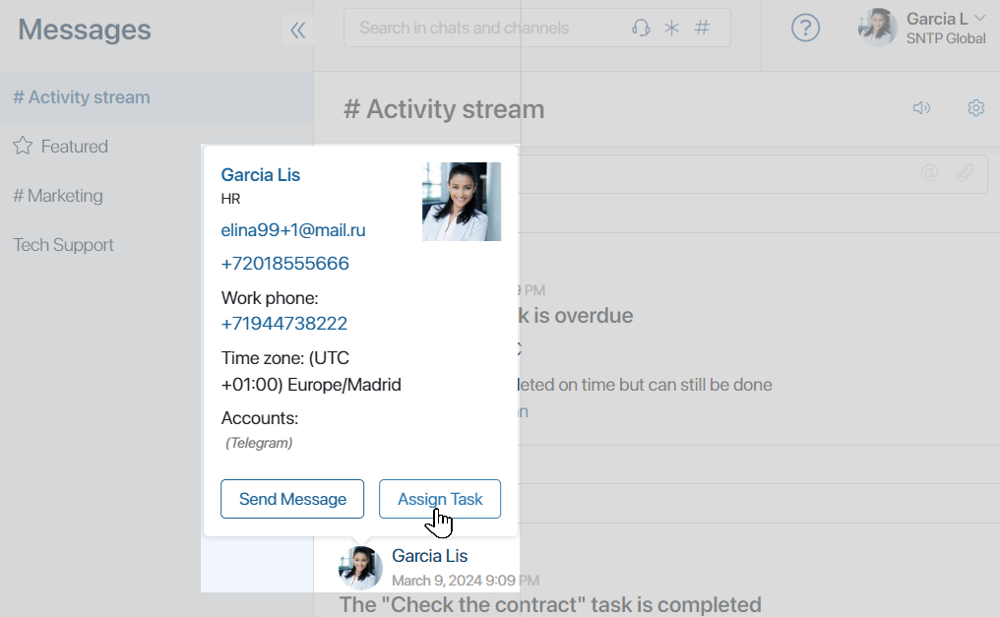
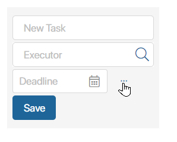
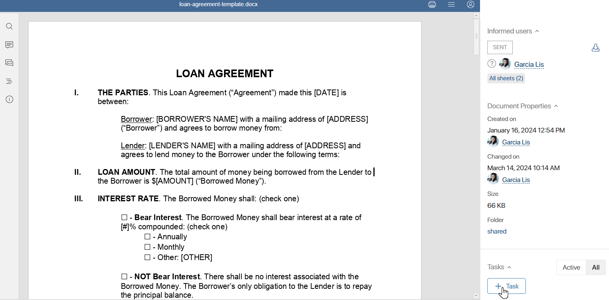
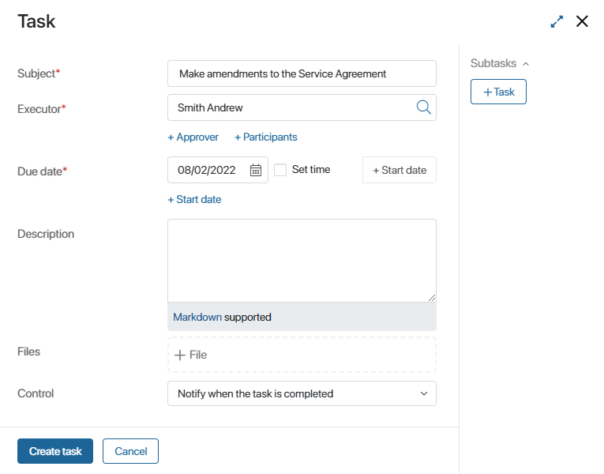
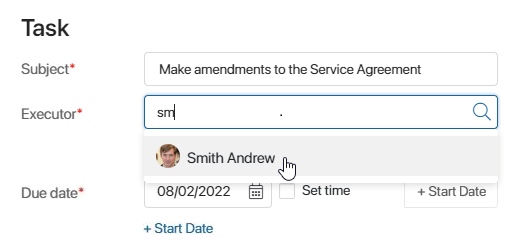
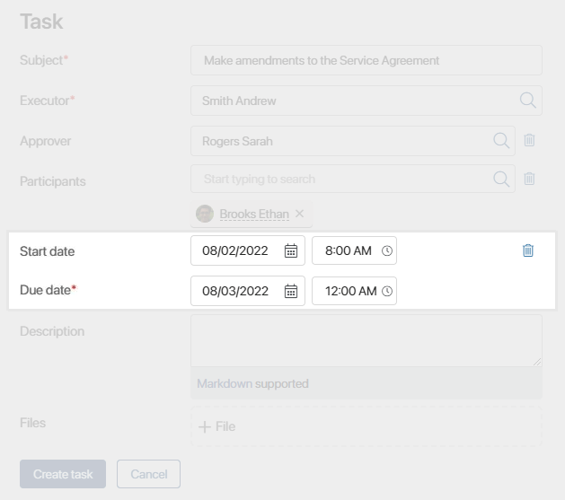
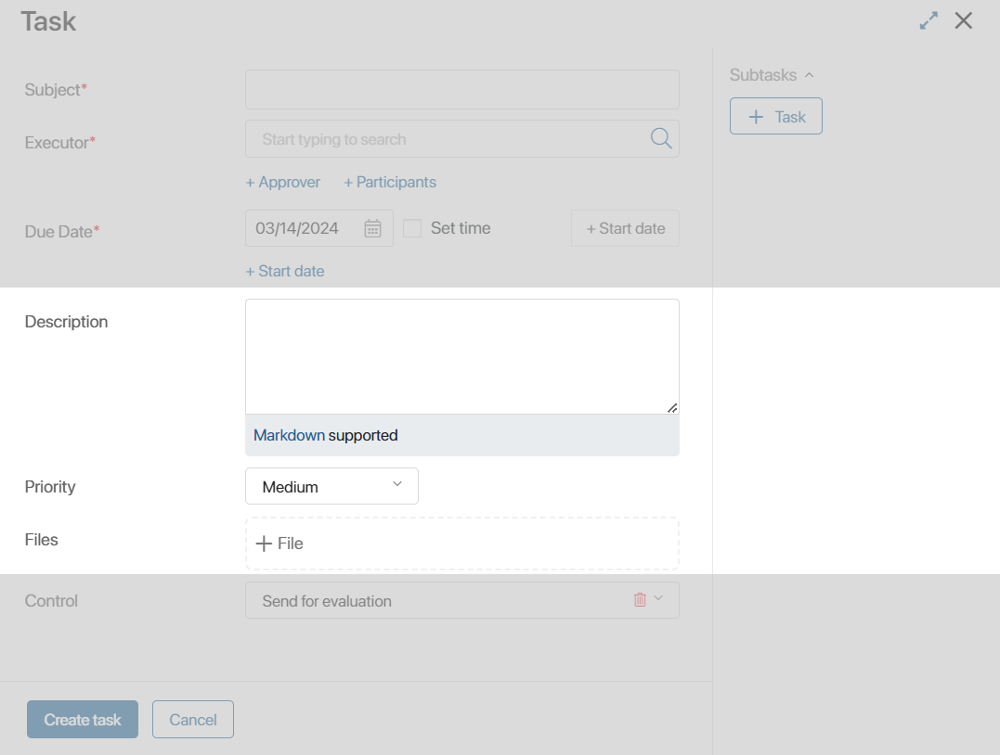
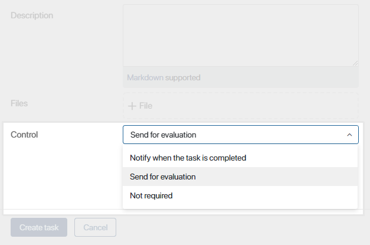

A task is one of the tools for organizing work within a company. Employees set deadlines and track tasks, exchange necessary information and documents, and do everything in order to achieve the intended results on time.
Create a task
There are four ways to create a new task:
- In the Tasks workspace.
Click the +Task button in the upper right corner.

- By clicking a user’s name.
You can assign tasks to other users right in the #Activity stream or a chat. To do this, click the user’s avatar or name. In the dialog box that opens, select Assign task.

- On the page of an app item.
You can assign a task while viewing an app item. To do that, click the +Task button on the side panel.
A form for quick task creation will appear. To open a window with a full set of fields, click on the three dots.

- Open a file for viewing.
You can create a task on a file from its page. To do this, click in the upper right corner, then click +Task in the sidebar that opens.

The form for quick task creation will be displayed.
Fill in the form of task creation. The specified data is validated. Fields with errors are highlighted in red. The system administrator can also enable displaying a widget with the list of validation errors in the company settings.
On the task form, enter the task’s Subject*. It should be informative and clear. This will allow employees to easily navigate the task list.

Specify executors
In a task, you can specify three roles:
- Executor. This is a user or a group of users responsible for the task. The executor is specified when assigning a task, but later the task can be reassigned to another user. Please note that if you select an employee who is currently absent, the task might be automatically reassigned to their substitute according to the substitution settings.
- Approver. This is the person who will approve the task.
- Participant. These are employees who help the executor to complete the task. They can view the task page, get all the notifications associated with it, and reply to messages in the #Activity stream. You can select several participants for a task, but the employee specified in the Executor field is responsible for task performance.
Select the person responsible for the task. To do that, start typing a user’s name, name of a group, role, or org chart item in the Executor field, or click the magnifying glass icon to select a user.
Specify more than one executor when you want to assign the same task to several users at the same time and view the results in one place. For example, to ask all managers to prepare a report for a month.
Please note that if you specify a group you belong to in the Executor field, the task is assigned to all its members except you. To include you in the list of executors, add yourself as a user.

Read more about the peculiarities of tasks assigned to multiple users in the Tasks with multiple executors article.
If necessary, specify who will approve the task and add other participants. To do this, click +Approver and +Participants under the Executor field.
Specify task deadlines
The Due date* field allows you to specify the deadline for the task with the accuracy of up to a minute. The specified date can be changed later. The entry about the change will be displayed in the task activity stream.
If you want to specify when the task should be started, use the +Start date option.
Once the task is created, it is automatically added to the employee’s personal calendar. The event starts the same day as the task is assigned to the employee and ends when the task deadline expires.
If the task start date is not defined, the event will be scheduled for the date specified in the Due date* field.

Add task details
Task details can be specified in the Description field. Markdown is supported, so you can format the text.
In the Priority field, specify the urgency of the task. Select Low, Medium, High, or Number. For the Number option, you can specify any value, for example, from 1 to 100. Employees will be able to find tasks with a high priority using search and execute them first.
If you need to add an attachment to the task, use the Files field. Drag files from the PC or click on the field and select the files you need. You can also attach documents from the Files workspace. To do this, click the three dots icon in the right corner of the Files field and select a document.

Track task progress
You can easily control schedule compliance and check the results of work using the Control field. Choose one of the following options:
- Notify when the task is completed. You will receive a notification in the #Activity stream when the task is completed. If a task has multiple executors, you will receive a notification when all executors have completed their work.
- Send for evaluation. When the responsible user completes the task, the system automatically assigns you a task to check the results. If there are several executors, the task is set when all executors have completed the work.
- Not required. Select this option if you don’t want to control the execution of the task.

Read more about the available options in the Task control article.
Edit a task
All tasks created by you are displayed in the Tasks > Assigned by me section. To find a specific task, use the Task search.
By opening the task page, you can:
- Reassign it to another executor.
- Reschedule the due date.
- Edit description, priority, and uploaded files.
- Change the list of participants.
The changes are displayed in the task activity stream. To learn more about actions with an assigned task, see the Actions with tasks article.
Access to tasks
By default, all users can view the task page in BRIX. Quick access to the task page depends on the role of the employee involved in its creation and performance. Users can find and open the task in different ways:
- The author can find it in the Tasks > Assigned by me section.
- Executors and the approver can find it in the Tasks > My tasks section.
- The author’s or executor’s manager according to the org chart can find it in the Tasks > My Department section, by clicking the name of the required employee.
- Participants can find it in the Tasks > Assisting section.
- Other users of the system can go to the task page if they have been mentioned in the activity stream of the task. In addition, a task can be opened from the app item from which it is assigned if the user has the permission to view this item.
The users specified in the task can change the details and perform other actions with it. Other employees can only view the page and leave comments in the associated activity stream. For more information on how to edit a task, read the Actions with tasks article.
Notifications about new tasks
By default, people see notifications about new tasks in the #Activity stream.
Additionally, each user can manage their own notification settings in the user profile on the following tabs:
- Notifications. On this tab you can disable notifications on tasks and change the mobile app notification settings.
- Tasks. On this tab you can enable:
- Sending notifications on tasks to the email specified upon user registration.
- Making approval decisions directly from the received emails for file and app item approval tasks. Make sure that the administrator has set up corporate email for sending approval task notifications.
- Reminders about upcoming task deadlines.